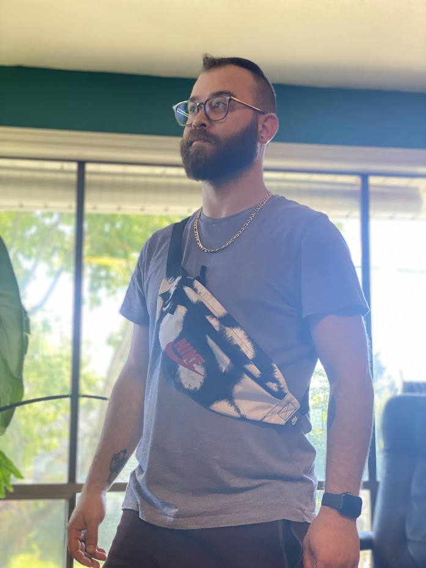
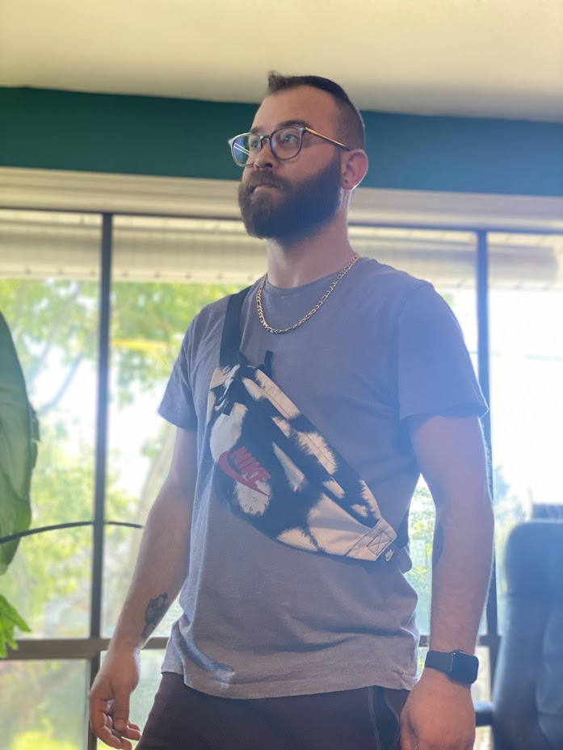

Here is a list of the projects I have created:
- Hello World
- Goodbye World
- Cookie Recipe
- My First Webpage
- Branching Test Project
- Cupcake Shop
- Boring Lecture
- Band Website
- Section In Review
- Animal Shelter
- Vacation Site
- Section In Review
This was my first project at Epicodus and was my first foray into HTML.
This project was another early learning practice site using HTML.
This is a cookie recipe I used to help learn about HTML code. Very little was done on this project.
This was my first real HTML webpage attempt. It uses HTML and CSS.
This project was designed to practice branching repositories through Github. It uses HTML and CSS.
This was an HTML practice website I made about a fictional cupcake shop. It uses HTML and CSS.
This was another practice HTML site created with Brandon Spear and William Mentzer. It uses HTML and CSS.
This was a band page made for the fictional band: The Golden Spear of Mentzer! It was created with Brandon Spear and William Mentzer. It uses HTML and CSS.
This project was a review of what I have learned in the first week of Epicodus. It uses HTML and CSS.
This is an HTML site that Trevor Hunter and I made for adopting "dogs" that was a lot of fun to make! It uses HTML and CSS.
This is an HTML site that Trevor Hunter and I made about visiting Japan. Check out the review from Calvin! It uses HTML, CSS, and Bootstrap.
This project was a review of what I learned in the first week of Epicodus. It uses HTML, CSS, and Bootstrap.
About Me
- Age: 32
- Hometown: West Hills, California
- Status: Married
- Current City of Residence: Portland, Oregon
- Hair Color: Brown
- Eye Color: Brown
- Height: 5'11"
- Mood: Check Mood Ring
My Background
Before starting at Epicodus, my life has been very Theatre oriented.I began acting at the age of 8 and my love for the art form grew as I got older. I attended Pacific University after graduating high school in 2008. At Pacific University, I fell in love with Theatrical Design. I decided to pursue Scenic and Lighting Design work after graduating in 2012.
Over the next decade, I worked in the professional Theatre world in Portland. I worked with Shaking the Tree Theatre, Third Rail Rep, Theatre Vertigo, Profile Theatre, ART, and other professional companies. I also found a lot of work in Educational Theatre, working at Da Vinci Middle School, Tigard High School, and Clark College. Working in education, I discovered I was a good teacher.
After years of convincing from my wife and in-laws (who were educators) I decided to pursue my Master's of Education. I graduated from George Fox in April of 2021 and began work as a Drama Teacher at Oregon City High School. Although I love Theatre and teaching, I found that the world of education is not a stable enough environnment for me and I began looking for new avenues of employment. I also noticed that my love of Theatre had changed over the years due to it being a job and not a hobby. I joined Epicodus in August of 2022. My hope is that through coding, I will have a better work-life balance and hopefully rekindle my passion for Theatre.
My Hobbies, Interests, and Skills
- Basketball
- Video Games
- Board Games
- Playing with my dogs
- Traveling
- Adventures with my wife
- Theatre
- Trying new foods
- Woodworking
- Thearical Rigging
- Minor Electrical